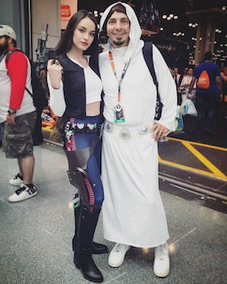
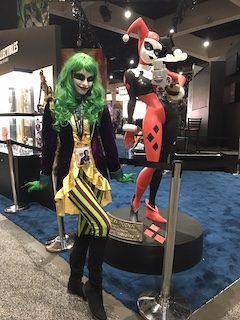
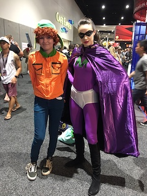

Cosplay is defined as the practice of dressing up as a character from a movie, book, or video game.
I love to cosplay because it gives me the opportunity to express and challenge my creativity. Crafting things by hand from various characters/worlds that have inspired me is incredibly powerful. You get to be someone else for a little while which can be a ridiculous amount of fun.
Another aspect of cosplay that I love so much is the community around it. People from all over the world connecting through characters that have impacted each of us in our own ways. It has taken me to conventions all over the states, including our mecca, aka san diego international comic con, and given me amazing friendships. Without cosplay I never would have fallen so deeply in love with "nerd culture"
And for your viewing pleasure here are a few of my favorite cosplays. Lady Solo is my favorite and then there is Lady Joker, not to be confused with Harley Quinn (; and Mysterion from south park's coon and friends!
  Here is a link to the largest online cosplay community